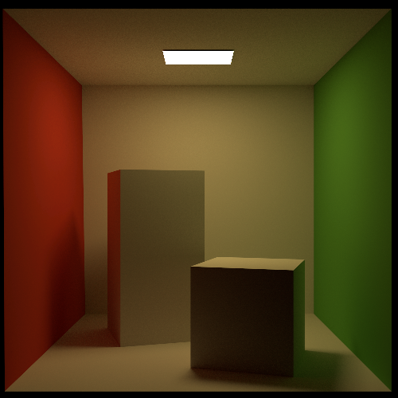

Real-time Renderer
A real-time deferred renderer using OpenGL. It is based on the standard Unreal 4 rendering model. It also does normal mapping and ambient occlusion among other things.

Path tracer
This is a simple Monte Carlo path tracer. It has a bounding volume hierarchy for fast ray-triangle intersections, and uses a physically-based rendering model.

Software Rasterizer
I wrote this software rasterizer after learning OpenGL because I wanted to better understand the rendering pipeline.

GameBoy emulator
A WIP GameBoy emulator: as of now it can start a game of Tetris. It also has an integrated debugger with a memory and VRAM viewer.